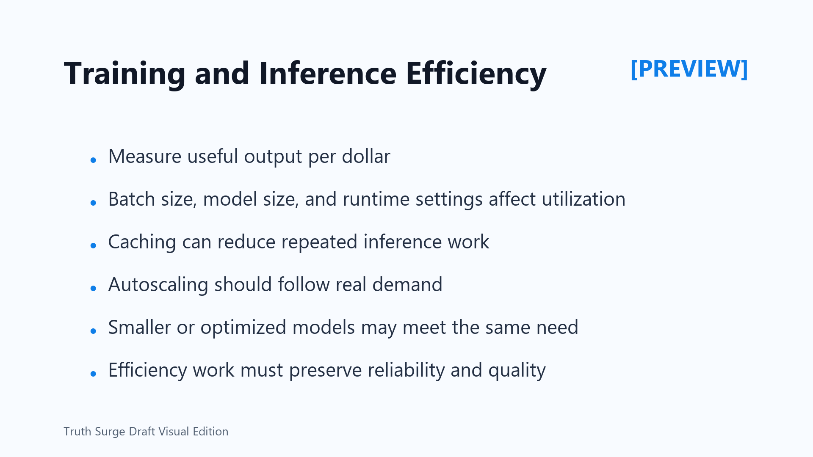

Training and Inference Efficiency
Connecting to LMS... Progress: in progress

Narration
Training and inference efficiency should be measured as useful output per dollar, not simply as maximum hardware activity. A busy GPU is not automatically cost-effective if the work is low value, the run is misconfigured, or the result is not usable.
For training, batch size, model size, data loading, checkpoint frequency, precision choices, runtime settings, and distributed coordination can all affect utilization. The goal is not to tune endlessly. The goal is to find the point where the workload produces reliable results with reasonable cost and operational complexity.
For inference, demand patterns matter. Caching can reduce repeated work when responses or intermediate results are reusable. Batching can improve throughput for some services. Autoscaling can help when it follows real demand, but it can waste money if it reacts to noisy signals or keeps too much capacity warm.
Smaller models, optimized deployments, or different serving patterns may meet the same business need at lower cost. Those choices should be evaluated against quality, latency, safety, and reliability requirements, not only raw spend.
Efficiency work is most useful when it is connected to measurement. Teams should know the cost per run, cost per batch, cost per evaluation, or cost per useful request where that is practical. That turns optimization from guesswork into engineering.
The safest efficiency program makes small, measurable changes. Adjust one setting, compare results, and keep the version that meets requirements with less waste. That approach avoids trading away reliability for a short-term cost drop.